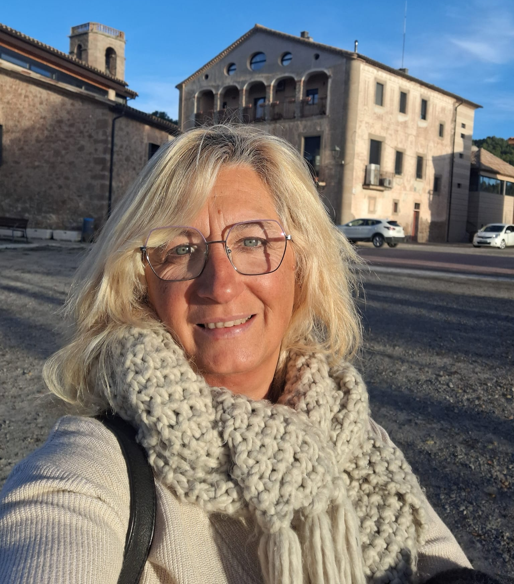

★★★★★
"Gracias a escuchar la oportunidad, he conseguido viajar con mejor precio y mas viajes. Funciona como una app personalizada y con un amplio abanico de navieras. Estoy muy satisfecho!"
Asesora de viajes · InCruises
Yo te ayudo a hacerlo realidad — en los mejores cruceros, ahorrando de verdad.

Sobre mí
Llevo años recorriendo el mundo y descubrí que los cruceros son la forma más completa de viajar: un solo precio que incluye alojamiento, comidas, entretenimiento y la magia de despertar cada día en un lugar diferente.
Hoy soy miembro activa de InCruises — la comunidad que te permite viajar mucho más por mucho menos. Y mi misión es acompañarte para que tú también puedas vivir esa experiencia.
Mi historia
Te cuento de primera mano qué es InCruises, cómo funciona y por qué cambió mi forma de viajar.
El proceso
Tres pasos y tu próximo crucero está en marcha.
Creas tu cuenta en InCruises y desde el primer momento recibes 50$ de bienvenida en tu monedero de viajes. Sin letra pequeña, sin trampas — ese dinero es tuyo para usarlo en tu próxima reserva.
Elige la membresía que mejor se adapta a ti: 50$, 100$ o 250$ al mes. Cada cuota se acumula en tu monedero y se aplica directamente al precio de tu crucero — cuanto más ahorras, más lejos llegas.
Elige entre más de 15 navieras internacionales y cientos de rutas por todo el mundo. Con tu saldo acumulado, el precio que pagas es una fracción de lo que encontrarías en cualquier buscador.
¿Y si además ganas dinero?
InCruises no es una agencia. Es una comunidad donde puedes construir tu propio negocio recomendando cruceros a otras personas. Tú eliges: viajar o viajar mientras generas ingresos.
Quiero saber más →Lo que dicen
"Gracias a escuchar la oportunidad, he conseguido viajar con mejor precio y mas viajes. Funciona como una app personalizada y con un amplio abanico de navieras. Estoy muy satisfecho!"
"No me lo creía cuando vi los precios. Crucero incluido, todo el barco disponible, y sin pagar lo que te cobran fuera. Montserrat me explicó todo con paciencia y claridad. Repetiré seguro."
¿Lista para zarpar?
Escríbeme por WhatsApp y en menos de 24 horas te propongo opciones personalizadas.
Enviar "CRUCERO" por WhatsAppO si prefieres el email: acuarela73@hotmail.com